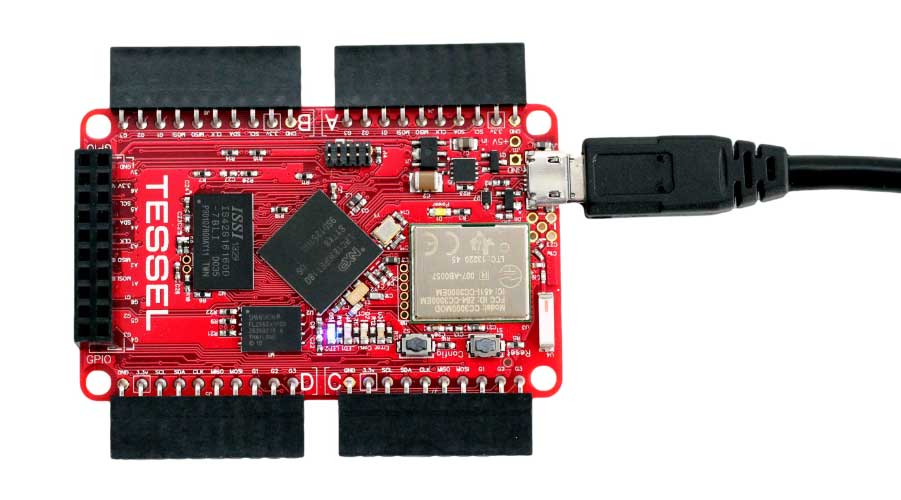

Allt är javascript/JSON
require för att importera.
var jsFile = require('./relative/path/file.js');
var jsFile = require('./relative/path/file.js');
var jsonFile = require('./relative/path/file.json');
// använder först file.js och sedan file.json
var someFile = require('./relative/path/file');
// letar först efter main i package.json
// annars index.js eller index.json
var someDir = require('./relative/path');
// letar efter core-modul med namn bajs
// sedan i ./node_modules/bajs
// sedan ../node_modules/bajs
// o s v
var bajs = require('bajs');
module.exports = "Hej hej från en sträng!";
// exporterar en literal
module.exports = function() { };
// exporterar en funktion
module.exports = {'key': 'value'};
// exporterar ett objekt
{
"name": "best-practices",
"description": "A package using versioning best-practices",
"author": "Art Vandelay <art@vandelay.com>",
"dependencies": {
"colors": "0.x.x",
"express": "2.3.x",
"optimist": "0.2.x"
},
"devDependencies": {
"vows": "0.5.x"
},
"engine": "node >= 0.4.1"
}
package.json
$ npm init
$ npm install pkg [--save, --save-dev, -g]
$ npm uninstall pkg [--save]
$ npm prune
$ npm ls
$ npm update pkg
git clone https://github.com/dermike/node-workshop.git
cd exempel/exempel1
Starta med node index.js
var http = require('http');
http.createServer(function (req, res) {
console.log('Request inkommet!');
res.writeHead(200, {'Content-Type': 'text/plain'});
res.end('Hello World!');
}).listen(1337, '127.0.0.1');
console.log('Server startad...');
Skriv om exemplet i modulform. Utgå ifrån ovning.js
Kom ihåg module.exports...
var http = require('http');
module.exports.start = function() {
http.createServer(function (req, res) {
console.log('Request inkommet!');
res.writeHead(200, {'Content-Type': 'text/plain'});
res.end('Hello World!');
}).listen(1337, '127.0.0.1');
console.log('Server startad...');
};
cd exempel/exempel2
npm initnode index.js och gå till localhost:1337 i webbläsare
"bin": {
"mesh": "mesh.js"
}
cd exempel/exempel3
npm installchmod +x mesh.js./mesh.js sökord./mesh.js sökord --visaBower - A package manager for the web
Hantera frameworks, libraries, assets, utilities
{
"name": "ReferenceGuide",
"version": "1.0.0",
"homepage": "https://github.com/dermike/ReferenceGuide",
"authors": [
"Mikael Jergefelt <mike@redvolume.com>"
],
"license": "MIT",
"private": true,
"dependencies": {
"bootstrap": "3.2.0"
}
}
bower.json
Gulp.js - the streaming build system
Plugins för att minifiera, konkatenera, strippa, modifiera m m
var gulp = require('gulp');
var uncss = require('gulp-uncss'), concatCss = require('gulp-concat-css'), concat = require('gulp-concat'), uglify = require('gulp-uglify'), minifycss = require('gulp-minify-css');
gulp.task('css', function() {
gulp.src(['bower_components/bootstrap/dist/css/bootstrap.css', 'css/custom.css'])
.pipe(uncss({
html: ['test.html'], // Saved from full copy of DOM
ignore: ['.collapsing', '.collapse.in', '.spacing']
}))
.pipe(concatCss("bundle.css"))
.pipe(minifycss())
.pipe(gulp.dest('./css'));
});
gulp.task('scripts', function() {
gulp.src(['bower_components/jquery/dist/jquery.js',
'bower_components/bootstrap/js/transition.js',
'bower_components/bootstrap/js/collapse.js',
'js/main.js'])
.pipe(uglify())
.pipe(concat('all.js'))
.pipe(gulp.dest('./js'))
});
gulp.task('default', ['css', 'scripts']);
Tessel - Hardware development for software developers
Ambient sensor (ljud och ljus)
"Clap to turn on the TV (paired with infrared) or know from a webapp if the lights are on at home."
var tessel = require('tessel');
var ambientlib = require('ambient-attx4');
var ambient = ambientlib.use(tessel.port['A']);
ambient.on('ready', function () {
// Get points of light and sound data.
setInterval( function () {
ambient.getLightLevel( function(err, ldata) {
if (err) throw err;
ambient.getSoundLevel( function(err, sdata) {
if (err) throw err;
console.log("Light level:", ldata.toFixed(8), " ", "Sound Level:", sdata.toFixed(8));
});
})}, 500); // The readings will happen every .5 seconds unless the trigger is hit